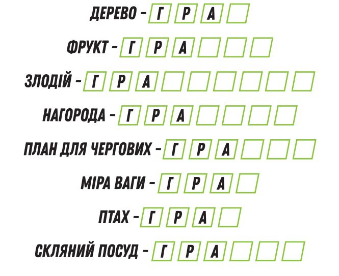
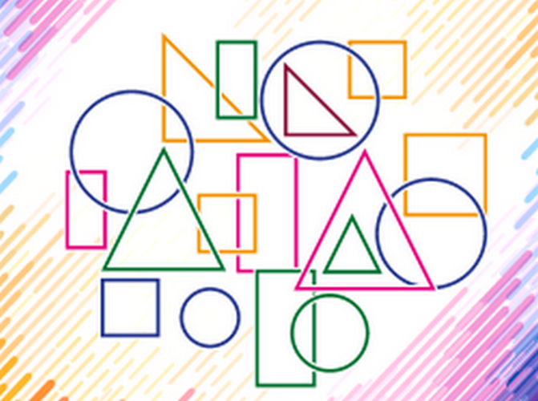

Доповнена реальність “Кит” (до с. 68 підручника)
Доповнена реальність “На крижині” (до с. 68 підручника)
Демонстрація роботи програми Animal 4D+ (до с. 68 підручника)
Корисні завдання
Це завдання сприятиме розвитку мовленнєвої культури дитини, уваги, кмітливості, збагаченню словникового запасу. Дитині пропонується розгадати й записати слова, у складі яких є «гра». Виконуючи завдання, дитина розвиватиме вміння розгадувати логогрифи, логічне мислення, пізнавальний інтерес, практикуватиме навички письма, вчитиметься створювати прості мовні ігри.
Рахуємо геометричні фігури
Це завдання надає чудову можливість закріпити знання дитини про двовимірні геометричні фігури: квадрат, трикутник, коло, прямокутник та п’ятикутник. Кожне завдання побудоване таким чином, аби максимально задіяти просторове сприйняття дитини та її увагу, особливо концентрацію та здатність до переключення, які важливі не лише для вивчення геометрії, а й для навчання в цілому. У завданнях дитині необхідно порахувати кожен вид геометричних фігур та записати відповідь у відповідній клітинці, а також позначити відсутні фігури.
Віртуальна VS доповнена реальність (до с. 68 підручника)
Відкриваємо пазли — відрізняємо віртуальну та доповнену реальності
Схожі іграшки(до с. 69 підручника)
Шукаємо спільну властивість іграшок